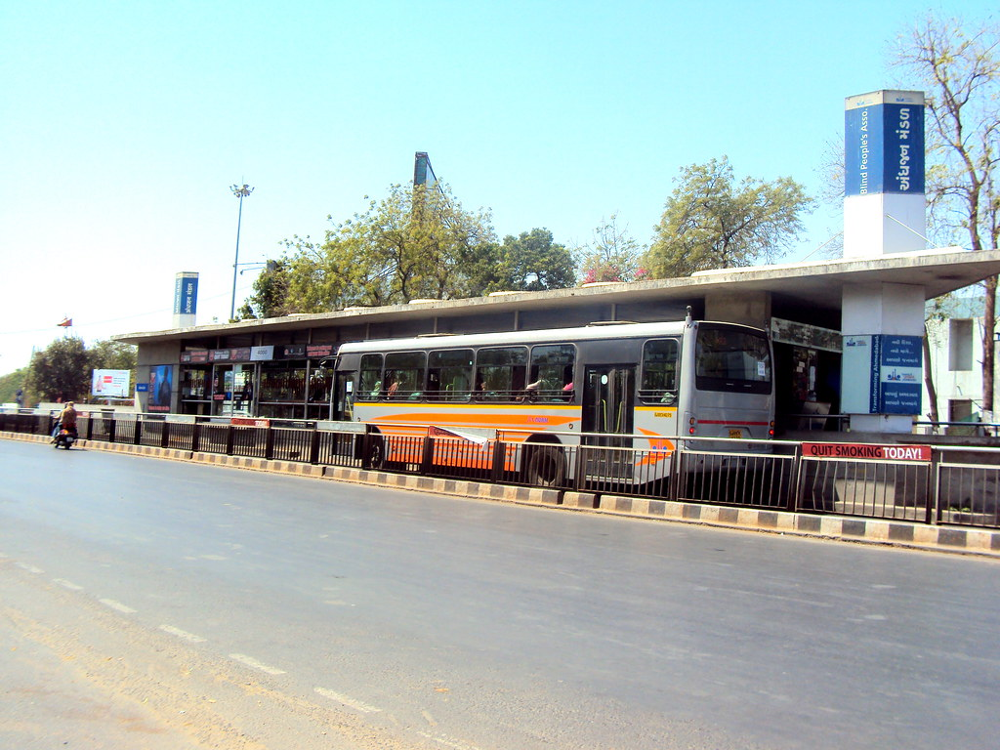
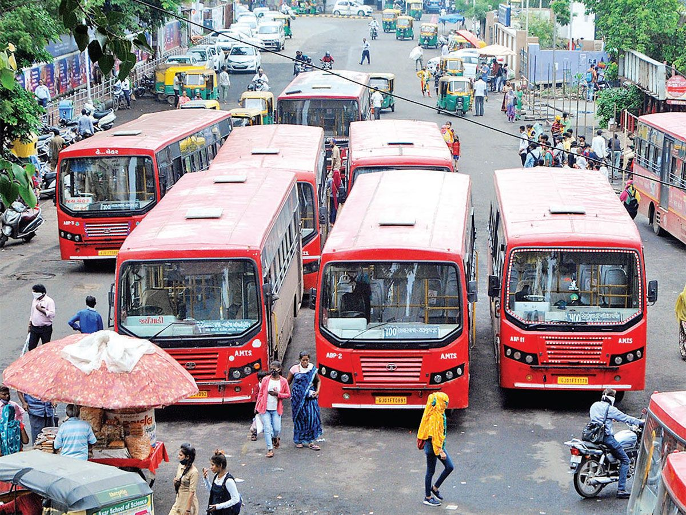

Transpotation in Ahmedabad (Click to view their locations)
Demand for transportation services grew with the development of Amdavad city. Bus routes up to Kathwada, Lambha, Ranip, Hathijan, Vanch, Ramol, Nikol and Amli Road were started during 1960. This facility helped the villagers and the students to visit Amdavad city.
- BRTS BUS(click to explore more)
-
AMTS BUS(click to explore more)BRTS
-
METRO(click to explore more)AMTS
Dedicated bus lanes that separate BRT buses from mixed traffic, pre-paid boarding and level platforms speed up passenger boarding, whilst traffic signal management prioritizes BRT buses. High-frequency bus service also minimizes waiting times to help save travel time for passengers
AMTS is India's largest Municipal Transport Service for local conveyance. It is a voluntary service managed by Amdavad Municipal Corporation under Bombay Provincial Municipal Corporations Act. Amdavad Municipal Transport Service (AMTS) runs the public bus service in the city of Amdavad. The responsibility of the administration of AMTS comes under the Amdavad Municipal Corporation.
Recent trends show that any metro development usually leads to better housing supply across the stretch developers find value in building projects along the key localities along the route. Real estate experts also speculate a similar impact in Ahmedabad. Combined with Mumbai-Ahmedabad Bullet Train, a key infrastructural project, the Ahmedabad Metro is likely to spur real estate growth in the city. Reducing the commuting time between different places in the city will lead to more commercial and residential developments across the areas where the metro service will become accessible. So, a boost in property prices in the city is anticipated as the completion timeline of the metro gets closer